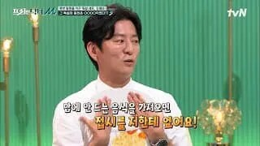
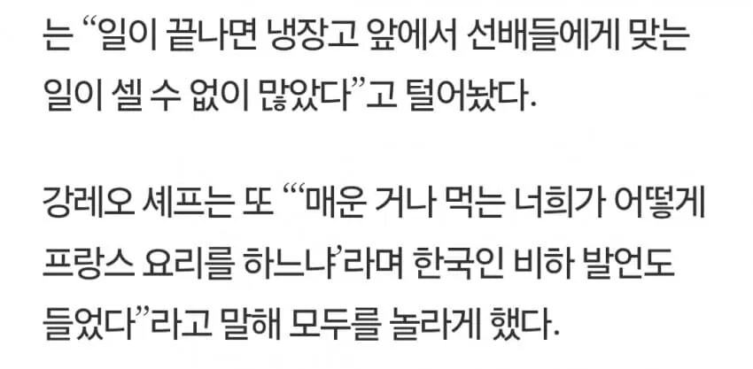
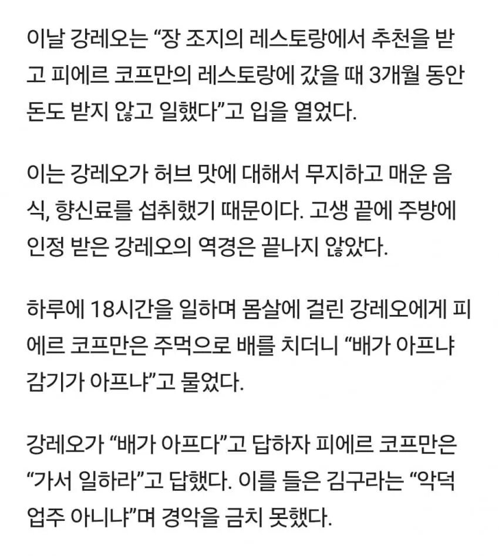
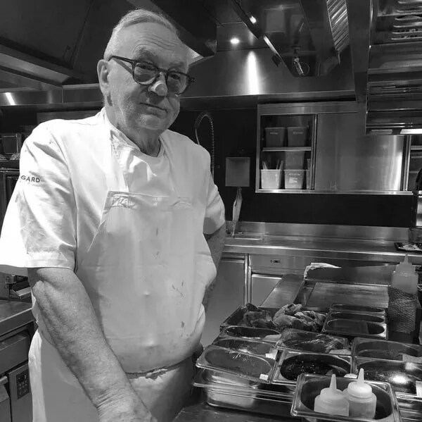
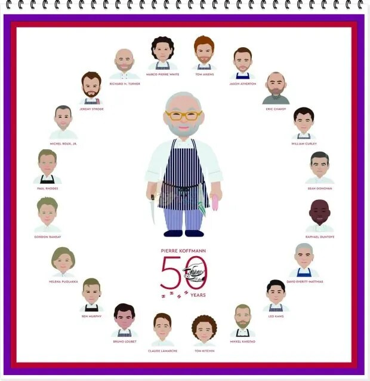

강레오는 감격적인 출근을 했지만 3일 만에 피에르 코프만한테 해고 통보를 받음.
"맵고 짠 음식에 익숙한 한국놈들은 미세한 맛을 느낄 수 없다. 넌 다음부터 나오지 마라."
이 말을 들은 강레오는 좌절했지만, 이보다 더 위대한 셰프는 없다는 걸 안 이상 이곳이 포기할 수 없었고
그는 막무가내식으로 무보수로 출근하겠다고 전함.
그렇게 한 달 동안 청소만 했는데도
코프만은 쓰레기통 차듯 발로 차면서 '왜 아직도 여기있냐?'하고 지나갔고
두 달 째 되던 날 '이제 그만 나와라'고 말하면서 차비 정도 챙겨줬지만
세 달 째 되는 날 드디어 첫 월급을 받게 됐고 강레오의 포지션까지 주게 되면서 인정을 받게됨.
한 번은 강레오가 눈물 콧물이 줄줄 흐르고 심한 고열에
금방이라도 쓰러질 정도로 심한 독감에 걸린 적이 있었는데
피에르 코프만이 다가와 왜 그러느냐고 묻자 감기에 걸렸다고 답하니까
코프만은 어깨를 쭉 피라고 하더니, 주먹으로 강레오의 배를 세차게 후려 갈겼습니다.
강레오는 숨이 막힐 정도로 아파했는데 그걸 본 피에르 코프만이 하는 말이,
"주먹이 아파? 몸살이 아파?"
"주먹이 더 아픕니다!"
"그럼 죽을 정도는 아니니까 뛰어!"
또 한 번은 레스토랑 오픈 15분 전, 열심히 냉장고를 열심히 정리하고 있었는데
피에르 코프만이 아직 다 안되었냐고 묻자 다 안되었고 빨리 끝내겠다고 답했는데
코프만은 지하에 가서 생선 한 마리를 가져오라고 오더를 내리자 강레오가 지시대로 생선을 가지고 올라왔는데
4L짜리 기름통이 엎어진 채로 냉장고에 처박혀 있었음.
옆을 보니까 피에르 코프만이 다리를 까닥이며 보고 있었고
알고보니 일은 미리미리 하라는 냉혹한 교훈이라며 코프만이 엎은 것이었다고
오픈 5분이 남았는데 강레오는 이걸보고 눈물이 핑 돌았다고함.
오더는 물밀 듯이 들어오고, 요리는 만들어야 하고, 냉장고까지 치우려고 하니 정신이 아득해졌었다고 회술함.

그렇게 온갖 개졷같은 개지랄을 견뎌가며 일한 끝에 최고의 셰프로 인정받게 되었고
나중 가서는 피에르 코프만 자신이 인정한 최고의 수제자 12명 중 한 명으로 인정 받게됨.
https://bbs.ruliweb.com/community/board/300143/read/73628878
저정도는 버텨낼 독한 놈만 데리고 일 하겠다는거지